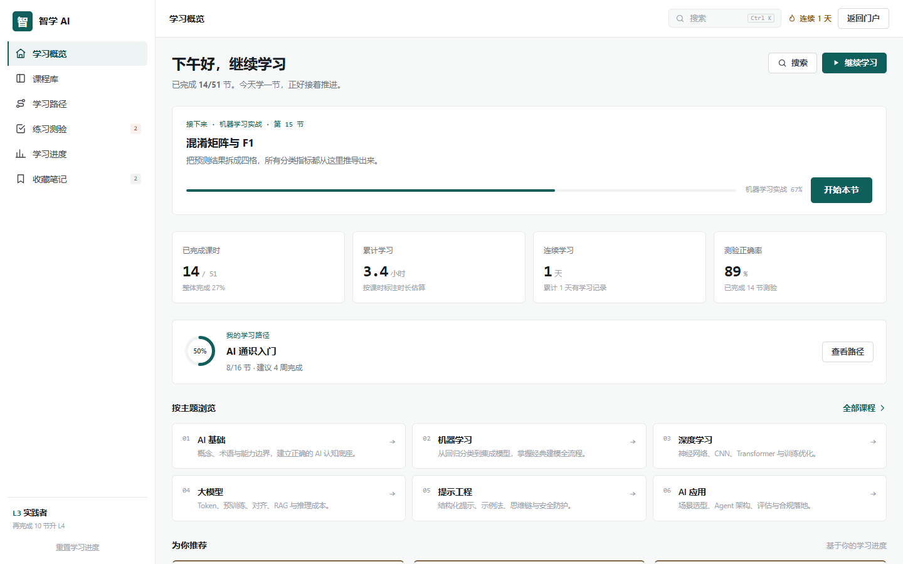
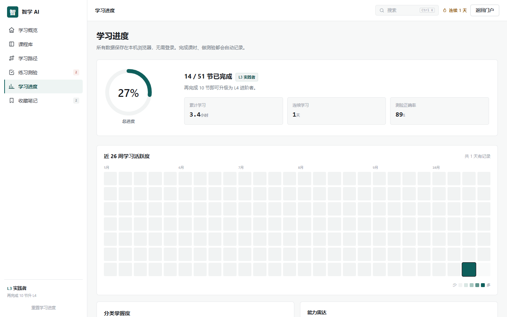
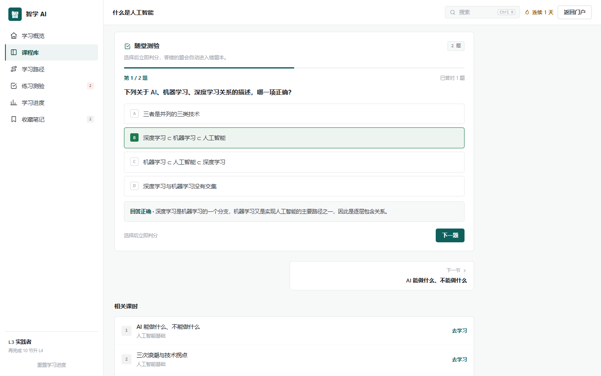
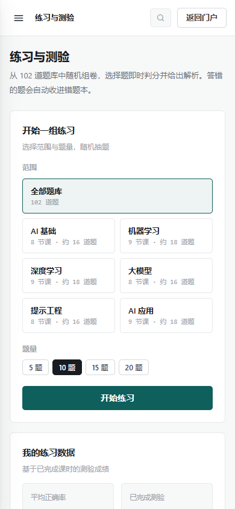
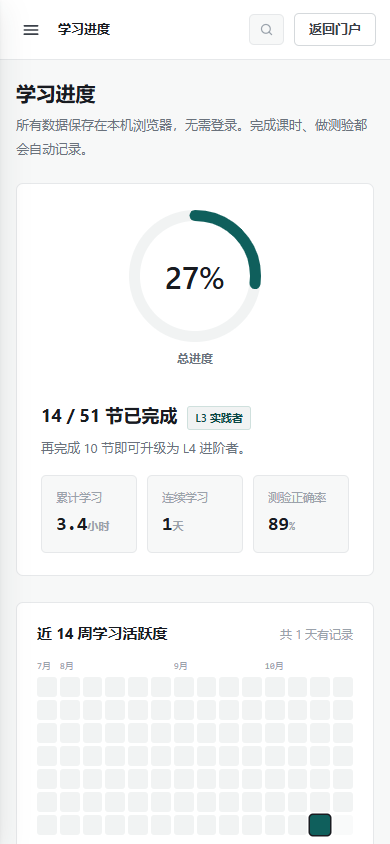
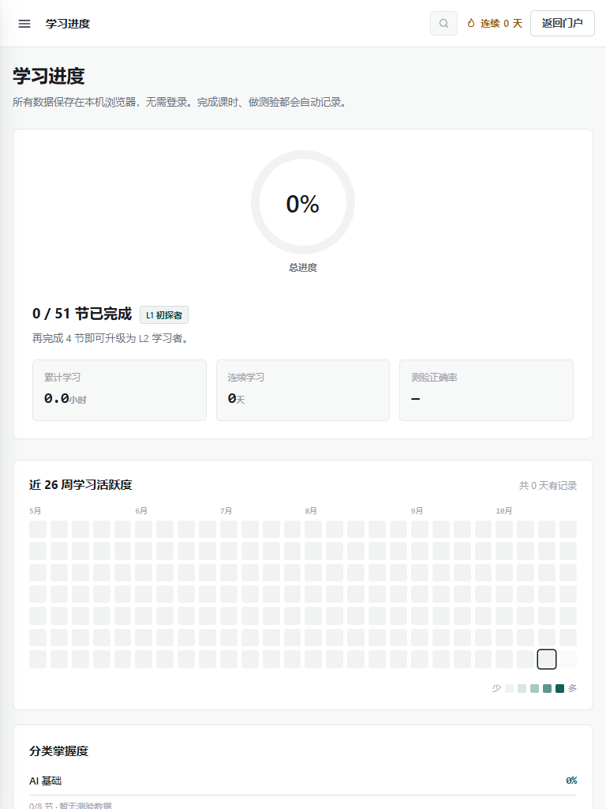

本次工作覆盖智学 AI 门户与学习工作台的全部 6 个功能板块：先做数据层与界面走查， 再用 Playwright 对桌面、平板、移动与 320px 窄屏四种视口执行端到端测试；过程中发现的问题均在本轮闭环修复， 最后以 100 项自动化断言和 76 条内部链接回归确认稳定。
不只看页面是否能打开，而是覆盖内容、状态、边界与不同屏幕尺寸。
用 Node VM 加载 data.js，检查课程、章节、课时、题目、选项、答案解析、路径与测评字段的完整性。
Playwright 驱动真实 Chromium，覆盖课程筛选、课时学习、测验判分、错题本、路径推荐、搜索、重置与存储异常。
在 1440×900、768×1024、390×844、320×720 四种视口逐路由检查横向溢出、控制台错误与页面状态，并爬取全部内部链接。
对门户、工作台首页、课程、课时、练习、进度、收藏与测评结果逐页截图，检查层级、留白、对比度与信息密度。
统一视觉语言，补齐响应式细节，并把关键状态反馈做成立即发生。
按影响范围分级；每条都标注根因、修复方式与验证依据。
| ID | 级别 | 问题 | 根因与修复 | 验证 |
|---|---|---|---|---|
| F-01 | P0 | 课程详情页所有课时链接指向 undefined | 章节里的原始课时对象没有 courseSlug，却被直接传入 lessonHash。改为先映射 LESSON_MAP 再生成链接。 | E2E 课时跳转 + 76 链接爬取 |
| F-02 | P1 | 退出后进入练习中心仍停留在上一轮结课测验 | renderPractice 复用了全局 PR.mode。改为只有带 exam 参数才建立测验会话，其余路由进入一律回到中心；测验每次重新组卷；练习会话中点击侧栏可退出。 | E2E 旧测验残留 + 侧栏退出 |
| F-03 | P1 | 标记完成或测验结束后，页内“已完成 / 本课数据 / 目录勾选”不更新 | 原实现用 router() 重渲染，既不同步又重置测验与滚动。改为 syncLessonState() 原地更新状态标签、按钮、数据卡和当前目录项。 | E2E 完成态同步 ×2 |
| F-04 | P1 | 收藏后“本课数据·收藏”仍显示未收藏 | 收藏只更新了按钮与侧栏。统一收进 syncLessonState()，并同步 aria-pressed。 | E2E 收藏页内同步 |
| F-05 | P1 | 答题后题头“已答对 N 题”停留在作答前的计数 | 计数文本只在 draw() 时渲染。增加 #qScore 并在判分后实时更新。 | E2E 答对计数同步 |
| F-06 | P1 | 无测验数据时，练习页与进度页显示 0%，与首页的“—”不一致 | 正确率改为按 quizDone 条件显示；分类掌握度在无测验样本时以覆盖率作为正确率分量，避免全学完仍只有 70%。 | E2E 空态正确率 ×2 |
| F-07 | P1 | 热力图在平板右侧被截断，桌面右侧留白，移动端需横向滚动且缺月份参照 | 放弃固定 28px + max-content，改为 repeat(N,1fr) + aspect-ratio 的全宽网格；桌面 26 周、移动 14 周；补月份标签、未来日期弱化与今日描边。 | 平板截图 + 移动 98 格 + 0 溢出 |
| F-08 | P1 | 移动端笔记列表仍强制两列，卡片被压窄 | 原网格写在 inline style，媒体查询无法覆盖。改为 .notes-grid 类并在 ≤900px 折叠为单列。 | 移动端计算样式 358px 单列 |
| F-09 | P1 | 雷达图在移动端被纵向拉伸 | drawRadar 写死了 inline 宽高，max-width 只压缩宽度。移除内联尺寸，改由 CSS max-width:100% + height:auto 维持比例。 | 移动端宽高比 360/300 校验 |
| F-10 | P1 | 重测时结果页等级可能低于侧栏实际等级 | 结果页展示 res.level，而应用等级是“进度等级与测评等级取高”。改为展示 Store.level() 的有效等级。 | 有进度状态视觉走查 |
| F-11 | P1 | 搜索浮层在路由变化后残留，继续拦截页面点击 | 搜索层挂在 body 上，路由只重绘 content。router() 开始时统一 closeSearch()。 | E2E 搜索 + 路由回归 |
| F-12 | P1 | localStorage 为损坏 JSON 或错误结构时页面崩溃 | Store.load 只判断 truthy。增加 isObj/isArr 校验，lessons/activity/mistakes/exams/profile 非法时回落默认。 | E2E 损坏 JSON + 错误结构 |
| F-13 | P2 | 重置进度后，测评瞬时答案 / 练习会话 / 课程筛选可能回潮 | 重置只清 Store 与 PR.mode。补齐 AS.idx/answers、PR.questions、CourseFilter 的重置。 | E2E 重置流程 |
| F-14 | P2 | 课程库无结果时只能看到提示，没有清空筛选的操作 | 空态新增“清除筛选”按钮，重置分类/难度/关键词并重绘列表。 | E2E 空态 → 6 门课程 |
| F-15 | P2 | 选择 20 题但范围不足时静默变成更少题量 | 组卷后比较实际题量与选择题量，不足时 Toast 提示。 | 逻辑走查 + E2E 组卷 |
| F-16 | P2 | 答错后只显示正确选项字母，学习反馈不足 | 测验判分、结果页与错题本统一显示“字母 + 完整选项文本”。 | E2E 错题本 + 视觉走查 |
| F-17 | P2 | 课程 100% 完成后主按钮仍写“继续学习” | 按 p.pct === 100 显示“复习课程”。 | E2E 全完成课程 |
| F-18 | P2 | 首页推荐课时卡缺少分类色顶线，与课程库卡片体系不一致 | miniLessonCard 补上 border-top-color = catColor。 | 首页视觉走查 |
| F-19 | P2 | 已掌握的错题再次答错会产生重复记录 | addMistake 按 qid 复用已有记录，重新打开并累加错误次数。 | E2E 错题订正流程 |
| F-20 | P2 | 输入笔记后立刻离开页面，500ms 防抖可能丢失内容 | 新增 blur 即时提交，防抖只负责输入中的自动保存提示。 | E2E 失焦立即保存 |
| F-21 | P2 | Windows 显示 ⌘K；桌面没有返回门户；移动输入触发缩放；锚点被 sticky 导航遮挡 | 按平台显示快捷键；顶栏恢复返回门户；移动输入 16px；section 增加 scroll-margin-top。 | E2E + 视觉走查 |
| F-22 | P2 | 门户品牌使用 span > div 非法嵌套；aria / disabled / reduced-motion / favicon 缺失 | 修正标签结构；补 aria-current、aria-expanded、aria-modal、role=status、disabled 属性、prefers-reduced-motion、favicon 与 theme-color。 | 结构检查 + 路由审计 |
| F-23 | P2 | 窗口跨 640px 断点缩放后，热力图仍沿用进入页面时的周数 | renderProgress 只在渲染时读取 innerWidth。增加 resize 监听，仅在跨越断点且位于进度页时重算 26 / 14 周，并保留当前滚动位置；320px 下同步优化统计项换行与标题字号。 | 预览复验 53/53：390↔768 热力图 14↔26 |
所有验证均在修复完成后重新执行，不接受“修复前通过”。
首页、课程筛选、课程详情、课时学习、随堂测验、练习组卷、结课测验、错题本、路径设置、能力测评、搜索、收藏笔记、进度、证书、重置、存储异常全部通过。
6 门课程 / 51 节课 / 102 道测验 / 4 条路径 / 6 题测评；课时 id 唯一，选项与答案索引合法，解析完整，题目无重复。
13 条路由 × 4 种视口；控制台错误 0，页面级横向溢出 0；平板与移动端的代码课时、热力图、笔记与雷达图均单独校验，320px 窄屏也无横向滚动。
爬取门户与工作台中的全部 hash 链接，包含 6 个课程页、51 个课时页、4 条路径、6 个结课测验入口；无 404、无 undefined 链接。
自动保存、失焦立即保存、刷新后恢复；测验成绩、错题、收藏、路径与测评结果均能从 localStorage 正确回读。
无效课程/课时/测验参数显示空态；损坏 JSON、错误结构数据、清零进度、无测验数据、空错题本、全部完成证书等场景均符合预期。
截图取自修复后的实际运行状态，数据为测试种子数据。






本轮不改变内容结构，也不引入后端依赖。
界面优化与问题修复已全部落地，回归测试 100/100 通过，内部链接 76/76 有效，三端页面状态审计无错误； 本地服务预览复验 53/53 通过。当前版本可以直接打开 index.html 进入门户，或打开 app.html 进入学习工作台。